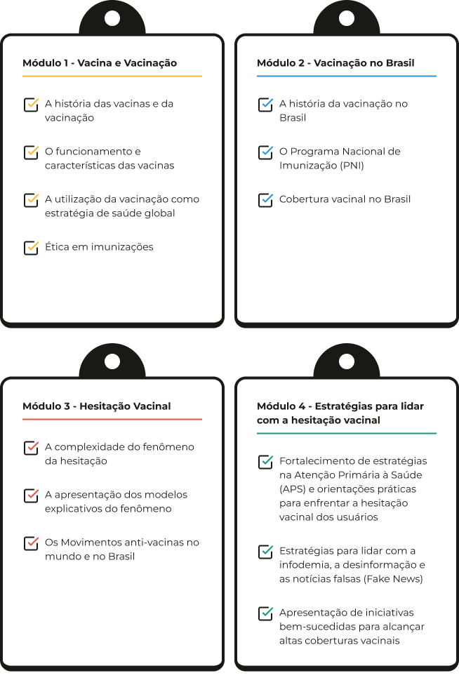
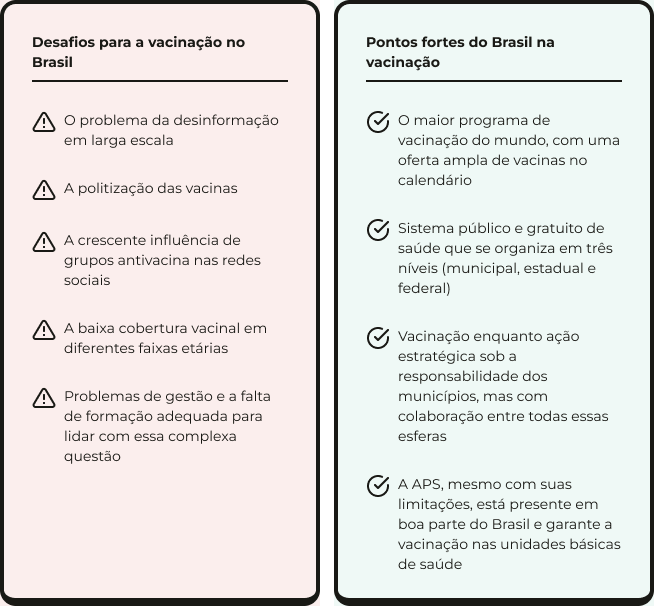

A jornada continua com você
Você chegou até aqui, na última aula do módulo e do curso. Parabéns! Esperamos que tenha aproveitado a jornada, aprendido mais sobre hesitação vacinal e tenha tido muitas reflexões sobre as possibilidades de atuação no cotidiano dos serviços de saúde.
O curso foi estruturado em quatro módulos e composto por um total de 13 aulas.
Objetivo do curso
Abordar o conceito de hesitação vacinal de forma crítica e contextualizada, considerando a realidade e a complexidade do Brasil e explorar as políticas de saúde relacionadas à imunização e as estratégias para a retomada das coberturas vacinais, com ênfase no papel da Atenção Primária à Saúde (APS) e no contexto do Sistema Único de Saúde (SUS).
O conteúdo do curso foi elaborado na perspectiva das ciências sociais e humanas em saúde, a respeito dos aspectos históricos, socioantropológicos, políticos, econômicos, legais, subjetivos, entre outros, que interferem no ato de indivíduos e coletividades de aderir ou não às vacinas e à vacinação. Por se tratar de uma tecnologia em saúde, o curso também trouxe conteúdos de base técnica e biomédica a respeito da composição e ação de imunização das diferentes vacinas disponíveis atualmente.
Na Introdução, vocês foram contextualizados quanto à motivação para o desenvolvimento do curso e, na apresentação, conheceram seus pressupostos e sua organização.
Ao longo dos quatro módulos do curso, foram exploradas diferentes dimensões do tema vacinação. Iniciou-se com os fundamentos históricos, científicos e éticos das vacinas, seguidos por um olhar específico sobre a experiência brasileira, com destaque para o PNI e os desafios da cobertura vacinal. Em seguida, discutiu-se a hesitação vacinal, suas causas e manifestações, incluindo os movimentos antivacinas. Por fim, foram apresentadas estratégias práticas para lidar com a desinformação e fortalecer a confiança nas vacinas, com foco na atuação dos profissionais da Atenção Primária à Saúde.

Com base na compreensão dos aspectos socio-históricos do desenvolvimento das vacinas ao longo dos últimos dois séculos e nas características dos imunizantes disponíveis atualmente, foi possível tratar a hesitação vacinal como um conceito em construção. Esse conceito ajuda a explicar as razões que levam indivíduos e coletividades a recusarem ou adiarem a decisão de se vacinar.
Além disso, o conteúdo trabalhado no curso, apresentou os principais desafios que afetam a cobertura vacinal no Brasil e no mundo, em todas as faixas etárias e interferem na aceitabilidade ou hesitação vacinal.
Vimos que o Brasil, que até há poucos anos era referência mundial em cobertura vacinal infantil — simbolizada pelo personagem Zé Gotinha — tem vivenciado um grave retrocesso, com a redução das taxas de vacinação em crianças. Essa diminuição na cobertura vacinal tem aumentado o risco de reintrodução de doenças antes controladas ou erradicadas, como o sarampo, a poliomielite, a difteria, a varicela (catapora) e a rubéola, elevando as chances de uma nova epidemia de grandes proporções.
Vimos que, a partir de 2023, o Ministério da Saúde, por meio do Movimento Nacional pela Vacinação, retomou o papel indutor do governo federal e da União no direcionamento e na condução de uma política de vacinação com caráter nacional e estratégico para a saúde pública.
No entanto, ao longo do curso foi apresentado que persistem setores da sociedade brasileira que, por razões políticas, atuam para limitar o acesso ampliado às vacinas. Um exemplo disso é a defesa da não obrigatoriedade da vacina contra a Covid-19 no calendário vacinal infantil, apesar das robustas evidências científicas que comprovam o impacto protetor dos imunizantes na redução da mortalidade de crianças pelo vírus Sars-Cov-2. Esse cenário reflete como as vacinas e a vacinação se tornaram temas centrais nas disputas políticas e ideológicas do Brasil contemporâneo.
Vimos também como a rápida disseminação de notícias falsas e desinformação contribuem para a desconfiança na ciência, as vacinas e nos formuladores de políticas fortalecendo grupos anti-vacinas e reforçando a hesitação vacinal.
Para entender melhor o cenário da vacinação no Brasil, organizamos a seguir os principais desafios e pontos fortes identificados ao longo do curso. Essa comparação ajuda a visualizar tanto os obstáculos quanto as potencialidades do nosso sistema de saúde na promoção da vacinação.

Portanto, refletimos que para superar as barreiras que enfrentamos no dia a dia, precisamos pensar no futuro, mas com atenção às ações que podemos tomar agora. É importante questionar o papel dos gestores, dos profissionais de saúde e dos usuários do SUS no enfrentamento da hesitação vacinal, além de formar profissionais capazes de lidar com os novos e complexos desafios que se apresentam no cenário da vacinação no Brasil. Isso requer um grande envolvimento público para que a vacinação volte a ser motivo de orgulho e uma prioridade nacional.
Compreendemos que os profissionais de saúde são protagonistas desse processo, o que redobra a necessidade de observarem a hesitação como parte da rotina e cotidiano da assistência à saúde nos territórios. No entanto, identificamos também a importância de mobilizar a sociedade, esclarecer a população acerca da importância da vacinação para a saúde pública nacional e mundial e a responsabilidade de todos nesse processo. Para além de um desafio do setor saúde e do SUS, a hesitação é hoje um grande problema social complexo que coloca em risco séculos de avanços na erradicação de doenças e no aumento da expectativa de vida.
Esperamos que este curso possa ter inspirado e motivado a cada um de vocês a contribuir para o aumento da confiança e adesão à vacinação por parte da população brasileira e da defesa da vida.
Vacina é Vida!
Vacina é para todas as pessoas!
Viva o SUS!
Após o estudo dos quatro módulos do curso, disponibilizamos a avaliação final no Ambiente Virtual de Aprendizagem (AVA) do curso. Siga as instruções e boa prova!
Esse curso tem certificação pelo Campus Virtual. Para receber o certificado, é preciso:
Se você já está matriculado vá direto para a avaliação:
FAZER A AVALIAÇÃO FINALSe não tem matrícula acesse aqui:
FAZER MATRÍCULA